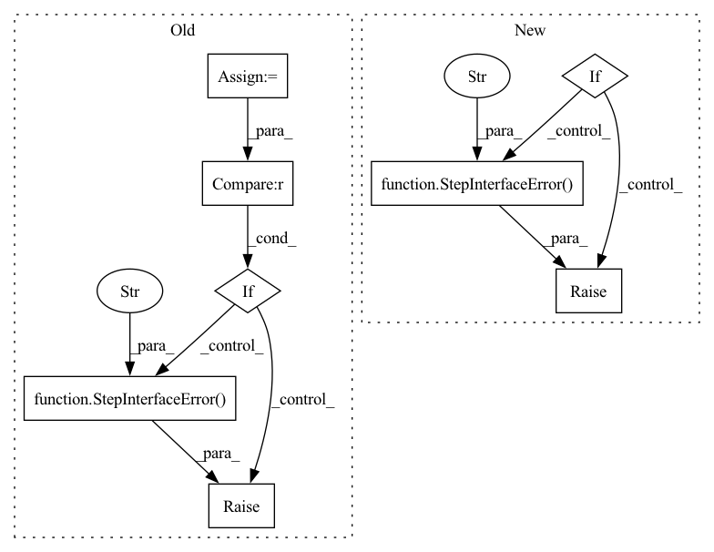

Pattern ID :14898

Before Change
self.__output_spec = dict()
self.__param_spec = dict()
instance_spec = inspect.getfullargspec(self.__init__)
process_spec = inspect.getfullargspec(self.process)
if instance_spec.varargs is not None:
raise StepInterfaceError(
"As ZenML aims to track all the configuration parameters "
"that you provide to your steps, please refrain from using "
"a non-descriptive parameter definition such as "*args".")
if instance_spec.varkw is not None:
raise StepInterfaceError(
"As ZenML aims to track all the configuration parameters "
After Change
class BaseStep:
def __init__(self, *args, **kwargs):
if args:
raise StepInterfaceError("") // TODO: fill
self.__component = None
self.__params = dict()
self.__input_spec = dict()
self.__output_spec = dict()
self.__param_spec = dict()
process_spec = inspect.getfullargspec(self.process)
process_args = process_spec.args
process_args.pop(0) // Remove the self
from playground.utils.annotations import Input, Output, Param
for arg in process_args:
arg_type = process_spec.annotations.get(arg, None)
if isinstance(arg_type, Input):
self.__input_spec.update({arg: arg_type.type})
elif isinstance(arg_type, Output):
self.__output_spec.update({arg: arg_type.type})
elif isinstance(arg_type, Param):
self.__param_spec.update({arg: arg_type.type})
else:
raise StepInterfaceError("") // TODO: fill
for k, v in kwargs.items():
// TODO: implement handling defaults
assert k in self.__param_spec
try:
self.__params[k] = self.__param_spec[k](v)
except TypeError or ValueError:
raise StepInterfaceError("")
def __call__(self, **artifacts):
// TODO: Check artifact types
self.__component = convert_to_component(step=self)(**artifacts,
In pattern: SUPERPATTERN
Frequency: 3
Non-data size: 8
Instances
Fragment ID: 49608406
Project Name: maiot-io/zenml
Commit Name: 018c5dfb718e7cebff929ade91aefca70afea81f
Time: 2021-08-05
Author: bariscandurak@hotmail.com
File Name: playground/steps/base_step.py
M Class Name: BaseStep
N Class Name: BaseStep
M Method Name: __init__(1)
N Method Name: __init__(1)
M Parent Class:
N Parent Class:
M File Name: playground/steps/base_step.py
N File Name: playground/steps/base_step.py
M Start Line: 10
M End Line: 60
N Start Line: 12
N End Line: 47
'>
Before Change
with a wrong name/type.
maximum_arg_count = 1 if self.CONFIG_CLASS else 0
if (len(args) + len(kwargs)) > maximum_arg_count:
raise StepInterfaceError(
f"Too many arguments ({len(kwargs)}, expected: "
f"{maximum_arg_count}) passed when creating a "
f""{self.step_name}" step."
)
if self.CONFIG_PARAMETER_NAME and self.CONFIG_CLASS:
if args:
config = args[0]
After Change
with a wrong name/type.
maximum_arg_count = 1 if self.CONFIG_CLASS else 0
arg_count = len(args) + len(kwargs)
if arg_count > maximum_arg_count:
raise StepInterfaceError(
f"Too many arguments ({arg_count}, expected: "
f"{maximum_arg_count}) passed when creating a "
f""{self.step_name}" step."
)
if self.CONFIG_PARAMETER_NAME and self.CONFIG_CLASS:
if args:
config = args[0]
'>
Fragment ID: 49608375
Project Name: maiot-io/zenml
Commit Name: 440921b0a17c9c175bfc48de414d2c7118083daf
Time: 2021-11-05
Author: michael.schuster.ffb@googlemail.com
File Name: src/zenml/steps/base_step.py
M Class Name: BaseStep
N Class Name: BaseStep
M Method Name: _verify_arguments(1)
N Method Name: _verify_arguments(1)
M Parent Class:
N Parent Class:
M File Name: src/zenml/steps/base_step.py
N File Name: src/zenml/steps/base_step.py
M Start Line: 202
M End Line: 210
N Start Line: 210
N End Line: 219
'>
Before Change
// Infer the defaults
cls.PARAM_DEFAULTS = dict()
process_defaults = process_spec.defaults
if process_defaults is not None:
raise StepInterfaceError(
"The usage of default values for "
"parameters is not fully implemented yet."
"Please do not use default values in "
"your step definition."
)
// for i, default in enumerate(process_defaults):
// // TODO: [HIGH] fix the implementation
// process_args.reverse()
// arg = process_args[i]
After Change
return_tuple[1]
):
cls.OUTPUT_SPEC.update({return_tuple[0]: BaseArtifact})
elif default_materializer_factory.is_registered(return_spec):
// If its one output, then give it a single return name.
cls.OUTPUT_SPEC.update({SINGLE_RETURN_OUT_NAME: BaseArtifact})
else:
raise StepInterfaceError(
f"In a ZenML step, you can only return an arg type with "
f"a default materializer. You passed in {return_spec}, "
f"which does not have a default materializer."
)
return cls
class BaseStep(metaclass=BaseStepMeta):
'>
Fragment ID: 49608417
Project Name: maiot-io/zenml
Commit Name: eb872d5d15cb8d445ad34503f4d1cfd7696f0dc3
Time: 2021-10-12
Author: htahir111@gmail.com
File Name: src/zenml/steps/base_step.py
M Class Name: BaseStepMeta
N Class Name: BaseStepMeta
M Method Name: __new__(4)
N Method Name: __new__(4)
M Parent Class: type
N Parent Class: type
M File Name: src/zenml/steps/base_step.py
N File Name: src/zenml/steps/base_step.py
M Start Line: 33
M End Line: 93
N Start Line: 34
N End Line: 88